#Load libraries
library(tidyverse)
library(tidyr)
library(readr)
library(ggplot2)
library(dplyr)
library(knitr)
library(skimr)
library(purrr)
library(gt)
library(janitor)
library(dplyr)
library(stringr)
library(reshape2)
library(lubridate)
library(skimr)
library(tidymodels)
library(doParallel)ST-558 Final Project
EDA: Explaratory Data Analysis
Introduction:
Exploratory Data Analysis of Diabetes Risk Factors
Diabetes is a common chronic condition associated with substantial morbidity, mortality, and healthcare costs. Early identification of individuals at elevated risk can help target prevention and management efforts more efficiently. In this project, we work with a cross-sectional health survey dataset, in which the main outcome of interest is a binary indicator of diabetes status, Diabetes_binary` (1 = has diabetes, 0 = does not have diabetes).
The dataset includes a mix of demographic, behavioral, and health-related predictors that may be associated with diabetes. In this analysis, we focus on the following variables:
- Cardiometabolic risk factors
HighBP: history of high blood pressure
HighChol: history of high cholesterol
CholCheck: indicator of having had a recent cholesterol check
BMI: body mass index
- Health behaviors and lifestyle
Smoker: history of cigarette smoking
HvyAlcoholConsump: heavy alcohol consumption
PhysActivity: engagement in recent physical activity
Fruits,Veggies: regular consumption of fruits and vegetables
- Health status and healthcare access
Stroke: history of stroke
HeartDiseaseorAttack: history of coronary heart disease or MI
AnyHealthcare: any form of health coverage
NoDocbcCost: could not see a doctor because of cost
GenHlth: self-rated general health
MentHlth: number of days of poor mental health
PhysHlth: number of days of poor physical health
DiffWalk: difficulty walking or climbing stairs
- Sociodemographic characteristics
Sex
Age(coded in ordered age categories)
Education(education level categories)
Income(household income categories)
The goal of this exploratory data analysis (EDA) is to:
- Describe the distribution of the outcome
Diabetes_binaryand key predictors listed above.
- Visualize and summarize relationships between diabetes status and important risk factors (e.g., BMI, high blood pressure, physical activity, and socio-demographic variables).
- Identify potential issues that could affect modeling, such as missing data, outliers, skewed distributions, and highly imbalanced categories.
- Generate initial insights that will inform the choice of an appropriate predictive modeling strategy.
Ultimately, our objective is to use these predictors to build a predictive model for Diabetes_binary. In a separate modeling vignette, we will use the tidymodels framework with a training/test split to fit and compare candidate models, select a “best” model based on predictive performance, and then deploy that model as an API inside a Docker container. The current EDA vignette lays the foundation for those steps by providing a clear understanding of the data and the relationships we aim to capture in the model.
Task 1:Read in the dataset
#Read in the dataset
diabetes <- read.csv("data/diabetes_binary_health_indicators_BRFSS2015.csv")
head(diabetes) Diabetes_binary HighBP HighChol CholCheck BMI Smoker Stroke
1 0 1 1 1 40 1 0
2 0 0 0 0 25 1 0
3 0 1 1 1 28 0 0
4 0 1 0 1 27 0 0
5 0 1 1 1 24 0 0
6 0 1 1 1 25 1 0
HeartDiseaseorAttack PhysActivity Fruits Veggies HvyAlcoholConsump
1 0 0 0 1 0
2 0 1 0 0 0
3 0 0 1 0 0
4 0 1 1 1 0
5 0 1 1 1 0
6 0 1 1 1 0
AnyHealthcare NoDocbcCost GenHlth MentHlth PhysHlth DiffWalk Sex Age
1 1 0 5 18 15 1 0 9
2 0 1 3 0 0 0 0 7
3 1 1 5 30 30 1 0 9
4 1 0 2 0 0 0 0 11
5 1 0 2 3 0 0 0 11
6 1 0 2 0 2 0 1 10
Education Income
1 4 3
2 6 1
3 4 8
4 3 6
5 5 4
6 6 8Task 2:Data Cleaning and Preparation
# convert integer variables into factors
# define the labels for those with large number of distinct levels as a character vector
age_labels <- c("18-24", "25-29", "30-34", "35-39", "40-44", "45-49", "50-54",
"55-59", "60-64", "65-69", "70-74", "75-79","80-99")
income_labels <- c("<$10,000", "<$15,000", "<$20,000", "<$25,000", "<$35,000", "<$50,000", "<$75,000",">=$75,000")
diabetes1 <- diabetes |>
#add label for all variables with the same label at once
mutate(across(c(Smoker,Stroke,HeartDiseaseorAttack,PhysActivity,Fruits,Veggies
,HvyAlcoholConsump,AnyHealthcare,NoDocbcCost,DiffWalk),
~factor(.x,levels = c(0,1),
labels = c("No","Yes"))))|>
mutate(
Diabetes_binary = factor(Diabetes_binary,
levels = c(0,1), labels = c("No diabetes", "Diabetes")),
HighBP = factor(HighBP,
levels = c(0,1), labels = c("No high BP", "High BP")),
HighChol = factor(HighChol,
levels = c(0,1), labels = c("No high cholestrol", "High cholestrol")),
CholCheck = factor(CholCheck,
levels = c(0,1), labels = c("No cholestrol Check in 5 yrs", "Cholestrol checked in 5 yrs")),
GenHlth = factor(GenHlth,
levels = c(1,2,3,4,5),
labels = c("Excellent","Very good","Good","Fair","Poor")),
Sex = factor(Sex,
levels = c(0,1), labels = c("Female","Male")),
Education = factor(Education,
levels = c(1,2,3,4,5,6), labels = c("Unschooled",
"Grades 1-8",
"Grades 9-11",
"Grade 12 or GED",
"Some College",
"College Grad")),
)|>
mutate (Age_group=factor(Age,labels = age_labels),
.keep="unused")|>
mutate(Income_group=factor(Income,labels = income_labels),
.keep="unused")
head(diabetes1) Diabetes_binary HighBP HighChol CholCheck
1 No diabetes High BP High cholestrol Cholestrol checked in 5 yrs
2 No diabetes No high BP No high cholestrol No cholestrol Check in 5 yrs
3 No diabetes High BP High cholestrol Cholestrol checked in 5 yrs
4 No diabetes High BP No high cholestrol Cholestrol checked in 5 yrs
5 No diabetes High BP High cholestrol Cholestrol checked in 5 yrs
6 No diabetes High BP High cholestrol Cholestrol checked in 5 yrs
BMI Smoker Stroke HeartDiseaseorAttack PhysActivity Fruits Veggies
1 40 Yes No No No No Yes
2 25 Yes No No Yes No No
3 28 No No No No Yes No
4 27 No No No Yes Yes Yes
5 24 No No No Yes Yes Yes
6 25 Yes No No Yes Yes Yes
HvyAlcoholConsump AnyHealthcare NoDocbcCost GenHlth MentHlth PhysHlth
1 No Yes No Poor 18 15
2 No No Yes Good 0 0
3 No Yes Yes Poor 30 30
4 No Yes No Very good 0 0
5 No Yes No Very good 3 0
6 No Yes No Very good 0 2
DiffWalk Sex Education Age_group Income_group
1 Yes Female Grade 12 or GED 60-64 <$20,000
2 No Female College Grad 50-54 <$10,000
3 Yes Female Grade 12 or GED 60-64 >=$75,000
4 No Female Grades 9-11 70-74 <$50,000
5 No Female Some College 70-74 <$25,000
6 No Male College Grad 65-69 >=$75,000colnames(diabetes1) [1] "Diabetes_binary" "HighBP" "HighChol"
[4] "CholCheck" "BMI" "Smoker"
[7] "Stroke" "HeartDiseaseorAttack" "PhysActivity"
[10] "Fruits" "Veggies" "HvyAlcoholConsump"
[13] "AnyHealthcare" "NoDocbcCost" "GenHlth"
[16] "MentHlth" "PhysHlth" "DiffWalk"
[19] "Sex" "Education" "Age_group"
[22] "Income_group" #save the data as.RDS file to access it in the modeling.qmd
diabetes_final <- diabetes1
saveRDS(diabetes_final,"data/diabetes_final.rds")# Count total missing per variable
diabetes1 |> dplyr::summarize(across(everything(), ~ sum(is.na(.)))) Diabetes_binary HighBP HighChol CholCheck BMI Smoker Stroke
1 0 0 0 0 0 0 0
HeartDiseaseorAttack PhysActivity Fruits Veggies HvyAlcoholConsump
1 0 0 0 0 0
AnyHealthcare NoDocbcCost GenHlth MentHlth PhysHlth DiffWalk Sex Education
1 0 0 0 0 0 0 0 0
Age_group Income_group
1 0 0# Visual proportion
missing_summary <- diabetes1 |>
dplyr::summarize(across(everything(), ~ mean(is.na(.)))) |>
pivot_longer(everything(), names_to = "variable", values_to = "missing_prop")
ggplot(missing_summary, aes(x = reorder(variable, -missing_prop), y = missing_prop)) +
geom_col() +
coord_flip() +
labs(title = "Proportion of Missing Data by Variable",
x = "Variable", y = "Missing Proportion") +
theme_minimal()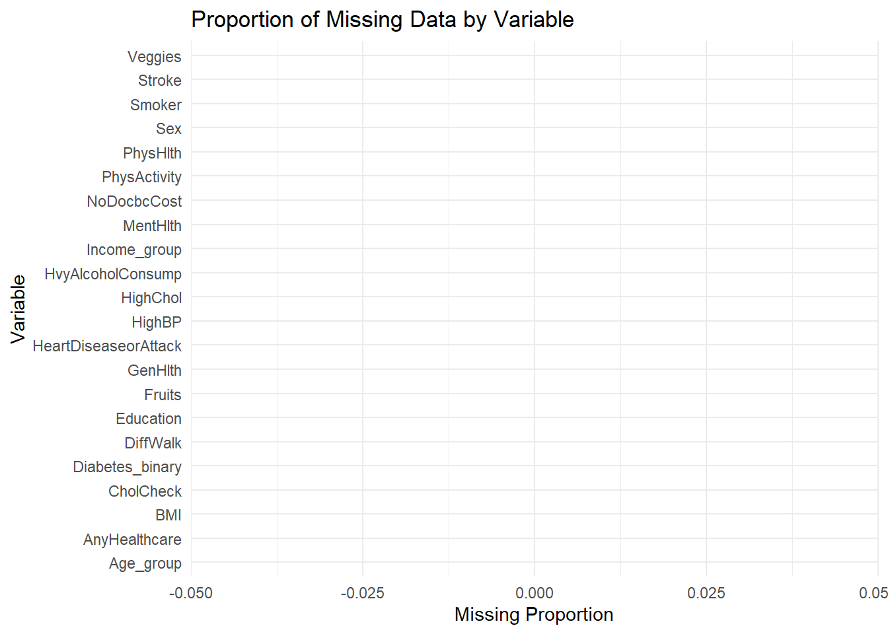
Before performing any modeling, it is important to evaluate the extent of missingness in the dataset. Across the 22 variables, the summary shows that missingness is absent for all variables.
The bar plot of missing proportions confirms that no variable contains any missing data, meaning the dataset is generally complete and suitable for predictive modeling.
Task 3:Summary Statistics
Summary for Factor Variables
One way contingency tables
The following code gives frequency plus percent of each factor.
factor_summary <-diabetes1|>
select(where(is.factor))|>
pivot_longer(everything(),names_to = "Variable", values_to = "Value")|>
group_by(Variable,Value)|>
summarise(Count=n(),.groups = "drop")|>
group_by(Variable)|>
mutate(Percent=round(100*Count/sum(Count),1))|>
ungroup()
factor_summary# A tibble: 62 × 4
Variable Value Count Percent
<chr> <fct> <int> <dbl>
1 Age_group 18-24 5700 2.2
2 Age_group 25-29 7598 3
3 Age_group 30-34 11123 4.4
4 Age_group 35-39 13823 5.4
5 Age_group 40-44 16157 6.4
6 Age_group 45-49 19819 7.8
7 Age_group 50-54 26314 10.4
8 Age_group 55-59 30832 12.2
9 Age_group 60-64 33244 13.1
10 Age_group 65-69 32194 12.7
# ℹ 52 more rowsTwo way contingency tables
#with proportion
prop.table(table(diabetes1$Diabetes_binary,diabetes1$PhysActivity))
No Yes
No diabetes 0.19197808 0.66868890
Diabetes 0.05147824 0.08785478From the table we can see that 26604 participant have both Diabetes and High BP. And 66.8% of the participants who exercise don’t have Diabetes.
Three way contingency tables
table(diabetes1$Diabetes_binary,diabetes1$HighBP,diabetes1$Smoker), , = No
No high BP High BP
No diabetes 82337 41891
Diabetes 4370 12659
, , = Yes
No high BP High BP
No diabetes 53772 40334
Diabetes 4372 13945out of 141,257 non smokers, 12659(~9% ) have diabetes and high BP out of 112,423 smokers, 13945(12.4%) have diabetes and high BP Even if the total number of smokers are relatively smaller, we have a higher percentage of people with both conditions (diabetes and high BP)
Summary for Numeric Variables
The following code gives summary of the numeric varaibles. Numeric vars = BMI, MentHlth, PhysHlth
num_summry <- diabetes1 |>
select(BMI, MentHlth, PhysHlth) |>
skim()
num_summry| Name | select(diabetes1, BMI, Me… |
| Number of rows | 253680 |
| Number of columns | 3 |
| _______________________ | |
| Column type frequency: | |
| numeric | 3 |
| ________________________ | |
| Group variables | None |
Variable type: numeric
| skim_variable | n_missing | complete_rate | mean | sd | p0 | p25 | p50 | p75 | p100 | hist |
|---|---|---|---|---|---|---|---|---|---|---|
| BMI | 0 | 1 | 28.38 | 6.61 | 12 | 24 | 27 | 31 | 98 | ▇▅▁▁▁ |
| MentHlth | 0 | 1 | 3.18 | 7.41 | 0 | 0 | 0 | 2 | 30 | ▇▁▁▁▁ |
| PhysHlth | 0 | 1 | 4.24 | 8.72 | 0 | 0 | 0 | 3 | 30 | ▇▁▁▁▁ |
Explore the Outcome: Diabetes_binary
#table
diabetes1 |>
tabyl(Diabetes_binary) |>
adorn_pct_formatting() Diabetes_binary n percent
No diabetes 218334 86.1%
Diabetes 35346 13.9%#plot
ggplot(diabetes1, aes(x = Diabetes_binary)) +
geom_bar(fill = "steelblue") +
labs(title = "Distribution of Diabetes Outcome",
x = "Diabetes Status",
y = "Count") +
theme_minimal()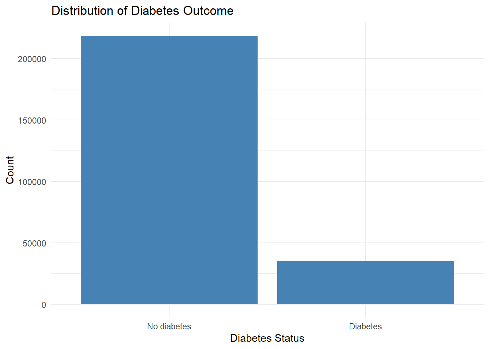
The outcome variable Diabetes_binary is imbalanced, with the majority of respondents classified as non-diabetic (0). This imbalance is important to note, because predictive modeling methods may require tuning or evaluation metrics that account for imbalance (e.g., ROC-AUC rather than accuracy alone).
Bivariate Exploration: Predictors vs. Diabetes_binary
Let’s explore how predictors relate to Diabetes_binary.
Diabetes_binary vs predictors
Contigency table: Diabetes_binary vs HighBP
#code
diabetes1 |>
dplyr::count(Diabetes_binary,HighBP) |>
group_by(HighBP) |>
dplyr::mutate(prop = n/sum(n))# A tibble: 4 × 4
# Groups: HighBP [2]
Diabetes_binary HighBP n prop
<fct> <fct> <int> <dbl>
1 No diabetes No high BP 136109 0.940
2 No diabetes High BP 82225 0.756
3 Diabetes No high BP 8742 0.0604
4 Diabetes High BP 26604 0.244 Plot: Diabetes_binary vs HighBP
visuals for Diabetes_binary vs some selected predictor variables.
predictors <- c("HighBP", "Fruits", "Veggies", "PhysActivity", "Smoker", "HighChol", "Income_group", "Education", "Age_group")
for (var in predictors) {
p <- ggplot(diabetes1, aes_string(x = var, fill = "Diabetes_binary")) +
geom_bar(position = "fill") +
labs(
title = paste("Proportion of Diabetes by", var),
x = var,
y = "Proportion"
) +
scale_y_continuous(labels = scales::percent) +
theme_minimal()
print(p)
}Warning: `aes_string()` was deprecated in ggplot2 3.0.0.
ℹ Please use tidy evaluation idioms with `aes()`.
ℹ See also `vignette("ggplot2-in-packages")` for more information.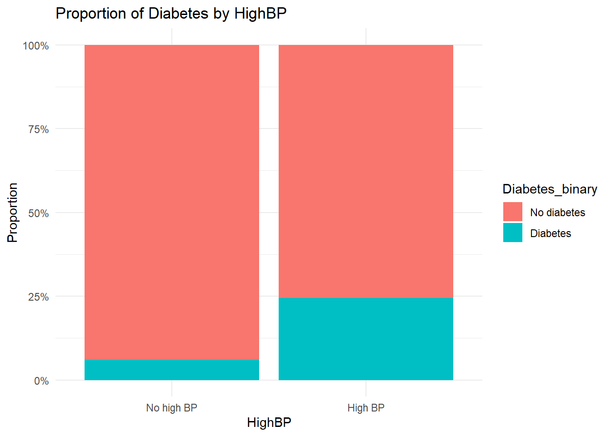
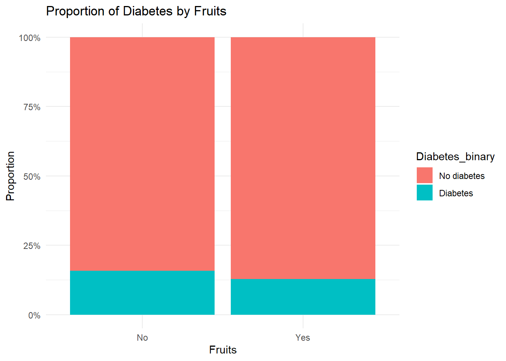
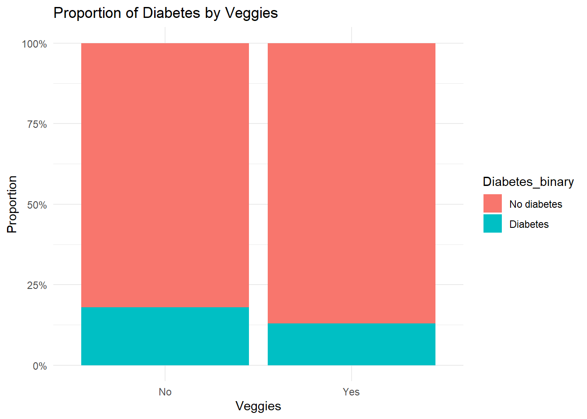
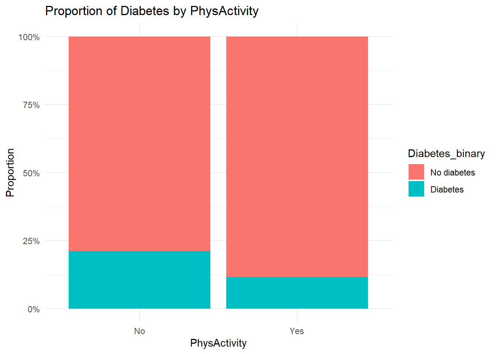
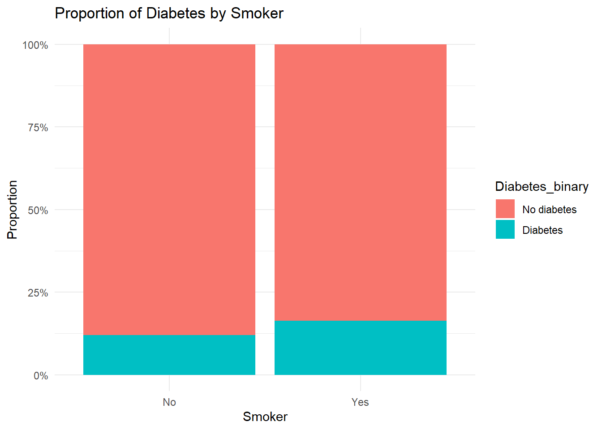
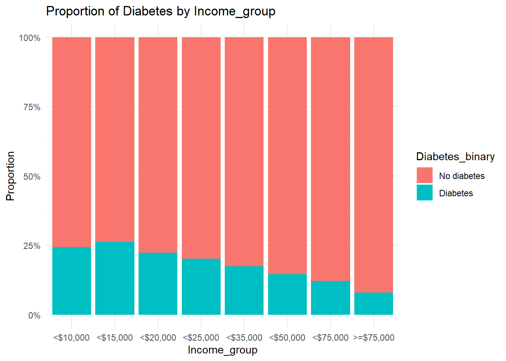
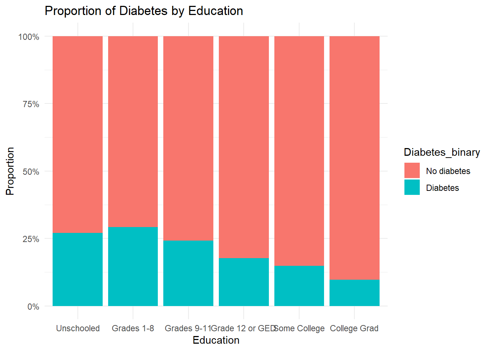
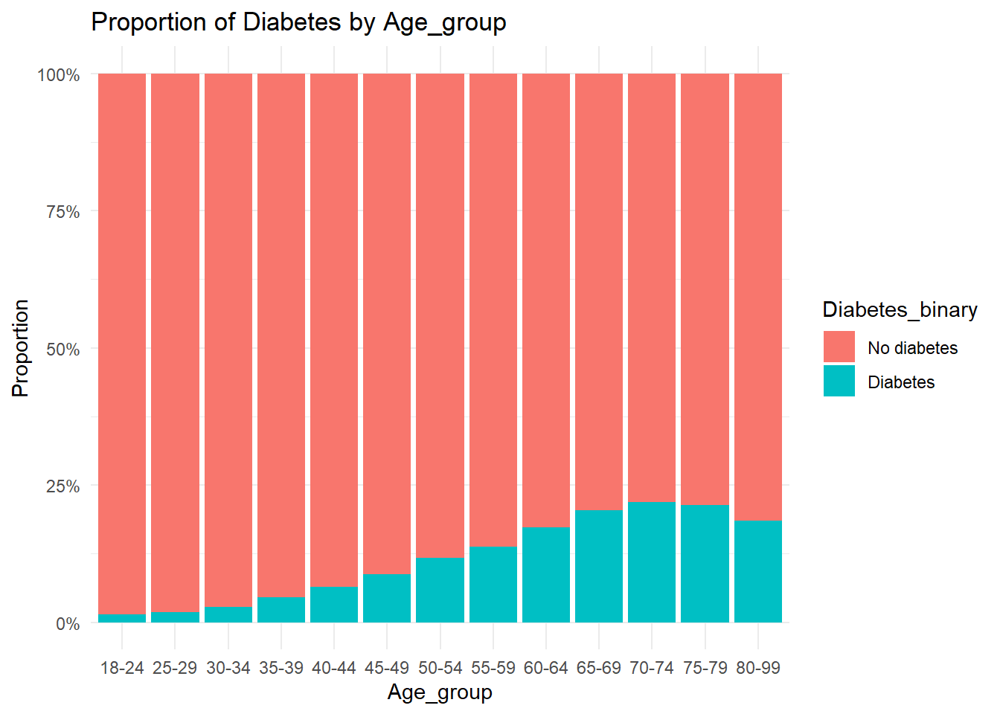
The bivariate visualizations were created to examine how each predictor is associated with out come variable (diabetes). Several variables show strong separation. Individuals with a history of high blood pressure or high cholesterol have a higher proportion of diabetes. Lifestyle factors, such as physical activity and poor diet (low fruit/vegetable intake), also show noticeable differences in diabetes prevalence. For Socio-demographic variables such as age, income, and education we see that older adults and individuals with lower income or education levels tend to have higher diabetes rates.
Numeric predictors vs. Diabetes_binary
Plot: BMI, Mental Health and Physical Health
vars <- c("BMI", "MentHlth", "PhysHlth")
var_labels <- c("BMI", "Mental Health", "Physical Health")
for (i in seq_along(vars)) {
v <- vars[i] # variable name
label <- var_labels[i] # label for the y-axis/title
p <- ggplot(diabetes1,
aes(x = .data[["Diabetes_binary"]],
y = .data[[v]])) +
geom_boxplot(fill = "tan") +
labs(
title = paste(label, "Distribution by Diabetes Status"),
x = "Diabetes Status",
y = label
) +
theme_minimal()
print(p) # show plot
}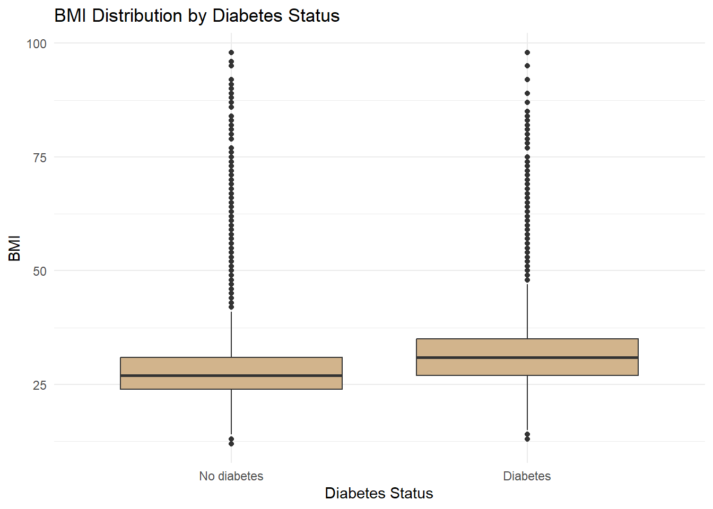

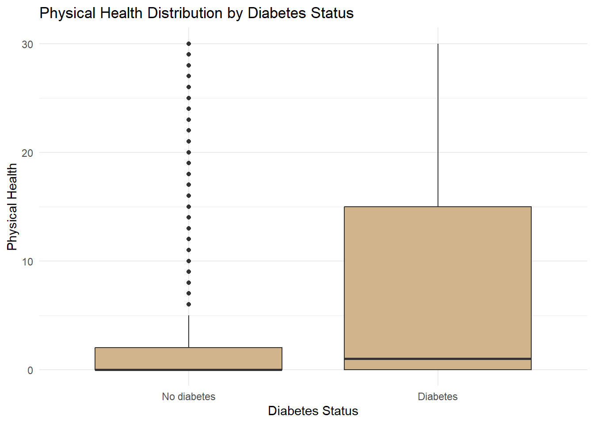
BMI differs markedly between individuals with and without diabetes, with diabetics showing higher median BMI. This aligns with known clinical risk patterns. Mental and physical health days show weaker or more variable separation, though diabetics tend to report more physically unhealthy days.
Correlations Among Numeric Variables
diabetes1 |>
select(BMI, MentHlth, PhysHlth) |>
cor(use = "pairwise.complete.obs") BMI MentHlth PhysHlth
BMI 1.00000000 0.08531016 0.1211411
MentHlth 0.08531016 1.00000000 0.3536189
PhysHlth 0.12114111 0.35361887 1.0000000Among the numeric variables, mental health and physical health are some how correlated.
Overall, the exploratory data analysis shows several strong relationships that are relevant for predictive modeling. Cardiometabolic variables such as high blood pressure and high cholesterol show clear associations with diabetes status. Lifestyle factors including physical activity and diet also demonstrate meaningful differences between diabetic and non-diabetic groups. Socio-demographic variables such as age, income, and education—indicate disparities that may inform model performance. The next step is to formally evaluate multiple models, compare their predictive performance, and select a final model to be deployed as an API.